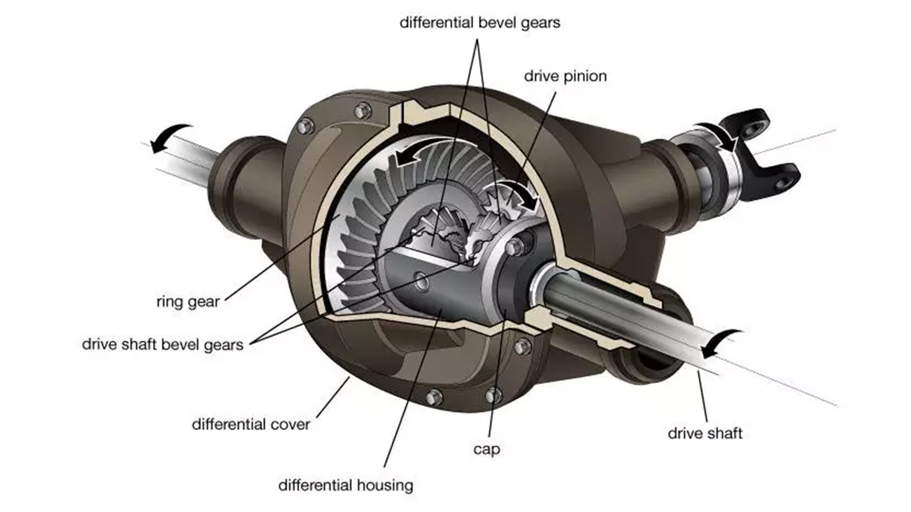

ENGINES
What are engines?
Engines are mechanical devices designed to convert various forms of energy into mechanical energy, often used to perform work or generate power. They are crucial components in many vehicles, machines, and power systems. Different types of engines exist, each operating on specific principles and fuel sources.LAYOUTS
Types of engines
Internal Combustion Engines:- Petrol/Gasoline Engines: Used in most cars, these engines burn a mixture of petrol and air.
- Diesel Engines: Commonly found in trucks and some cars, diesel engines combust diesel fuel and air
- Natural Gas Engines: Used in certain vehicles and industrial applications, these engines run on natural gas.
Electric Motors: Founds in electric vehicles (EV's)
Hybrid Engines: Seen in vehicles, where an internal combustion engine is combined with electric propulsion
Cylinders
In an internal combustion engine, cylinders are the individual cylindrical chambers within the engine block where the combustion process takes place. Each cylinder houses a piston that moves up and down within the cylinder to compress air and fuel, initiate combustion, and produce mechanical power
Capacity:
The total volume of all the cylinders in an engine determines its capacity or displacement, often measured in liters or cubic inches. Engine capacity is a factor influencing an engine's power and performance.Pistons:
Pistons are cylindrical components that fit into each cylinder. They move up and down within the cylinder, creating the necessary conditions for combustion and converting the pressure generated into mechanical motionEngine Configuration:
The number of cylinders in an engine contributes to its overall design. Common configurations include four-cylinder, six-cylinder, eight-cylinder, and even higher configurations in performance or larger vehicles Number of cylinders in cars with images V6, V8, V12, W16Intake:
What is an Intake?: In a car, the term "intake" typically refers to the air intake system, which is a crucial component for the internal combustion engine. The air intake system is responsible for bringing air into the engine, where it mixes with fuel for combustion. A well-designed intake system ensures the engine receives a consistent and optimal supply of air to maximize performance and efficiency.Types of Intakes:
Stock Air Intake: The factory-installed intake system designed to meet general performance requirements and emissions standards.Cold Air Intake (CAI): Draws cooler air from outside the engine bay to provide denser air for combustion, potentially improving performance and efficiency.
Ram Air Intake: Utilizes the forward motion of the vehicle to force air into the intake system, particularly effective at higher speeds.
Short Ram Intake (SRI): Shorter and more direct intake path designed for improved airflow and quicker throttle response.
Dual-Stage Intake: Features two modes for different driving conditions, optimizing performance at both low and high RPMs.
High-Flow Air Intake: Maximizes the volume of air entering the engine, often with larger-diameter intake tubes and high-flow air filters
OEM+ Intake: Aftermarket intake retaining a close resemblance to the stock system while offering improvements in airflow and performance.
Custom Fabricated Intake: Custom-designed intake systems tailored to specific needs, involving modifications or entirely new systems.
Turbocharger: Compresses intake air using exhaust gases, increasing air density and supplying more oxygen to the engine for combustion. (add turbo whistle)
Supercharger: Mechanically compresses intake air using a belt connected to the engine's crankshaft, providing immediate power delivery and increased air density. (add turbo whistle)
Horsepower:
Horsepower (hp) is a unit of measurement used to quantify the power output of an engine. It is a common unit for expressing the rate at which work is done or energy is transferred.Torque:
Torque in a car refers to the rotational force generated by the engine that enables the vehicle's wheels to turn. It is a crucial parameter for understanding the engine's ability to perform work, and it plays a significant role in determining a vehicle's acceleration, towing capacity, and overall performance.Differential:
Differential is a component in a car's drivetrain that allows the wheels to rotate at different speeds while maintaining equal torque. It is an essential part of most vehicles, especially those with rear-wheel drive or all-wheel drive systems. The primary purpose of a differential is to address the difference in rotational speed between the inner and outer wheels when the vehicle is turning.Vehicles with 4WD or AWD often have front and rear differentials to distribute power between the front and rear axles, allowing all four wheels to receive torque.
Types of Differentials:
1.Open Differential: Allows wheels to rotate at different speeds during turns. It is the most common type and is effective for regular driving conditions.2.Limited Slip Differential (LSD): Provides some degree of wheel speed differentiation, improving traction in certain conditions. LSDs can be mechanical, viscous, or electronic.
3.Locking Differential: Can be manually or automatically engaged to lock both wheels together, ensuring equal torque distribution. It is useful for off-road or low-traction situations.

Crankshaft:
Converts the reciprocating motion of the engine's pistons into rotational motion, providing power to the vehicle's drivetrain.Camshaft:
Controls the opening and closing of the engine's valves, coordinating with the crankshaft to regulate the intake and exhaust processes during combustionADDITIONAL TERMS
Engine Oil:
Lubricates internal engine components, reduces friction, and helps cool the engine; essential for proper engine function.Coolant:
Circulates through the engine to absorb and dissipate heat, preventing the engine from overheating; also prevents freezing in cold temperaturesSpark Plug:
Ignites the air-fuel mixture in the engine's combustion chamber, creating a spark for combustion and efficient engine operationFILTERS
Air Filter:
Removes airborne particles (dust, dirt, pollen) from incoming air before it reaches the engine, ensuring clean air for combustion.